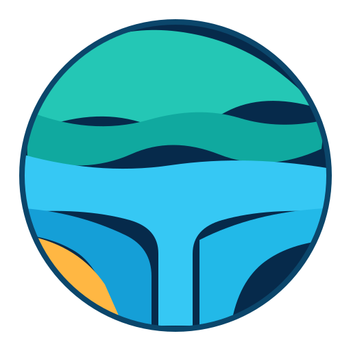

For recruiters
Use the gallery and public repositories to assess systems judgment, evidence discipline and geospatial platform work. Continue the conversation through a professional profile.

Tellurion demosPublic proof brief
Tellurion is self-hosted Community software built as an independent Rust geospatial serving engine. The stable v0.5.0 binaries and source are the primary evaluation route; the gallery retains five bounded demonstrations on their original engine versions.
Evidence transect
Each station has a public inspection route, with source, quickstart and manual links first.
Download Linux or Windows binaries, or build from source on macOS. Verify checksums and attestations before your first run.
Open the quickstart →Five separately defined services expose bounded vector, raster, multidimensional, 3D and harvest demonstrations.
Inspect the service definitions →The gallery shows returned features, images and 3D content while keeping synthetic and open-data cases labelled.
Open the seven paths →The gallery checker validates source and static contracts. Release manifests and live endpoints require separate verification after the Render switch.
Inspect the gallery checker →Deliberate boundary
Choose the review route
Use the gallery and public repositories to assess systems judgment, evidence discipline and geospatial platform work. Continue the conversation through a professional profile.
Start with the stable v0.5.0 local demo and installation guide. The checksummed 0.3.0 archives remain historical evidence. Review the licence boundary before any production or commercial decision.